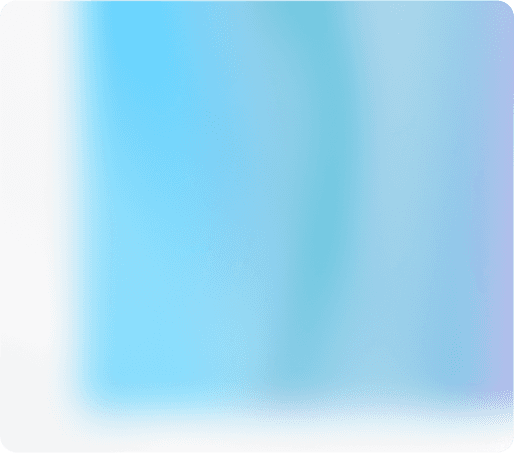
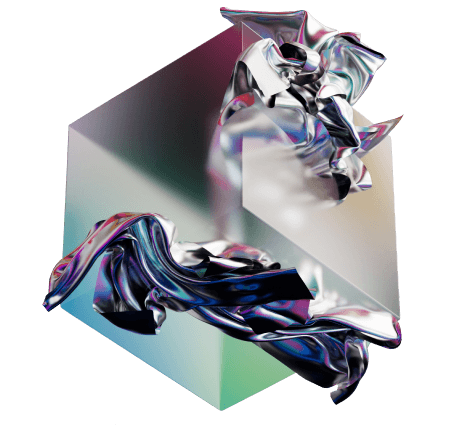
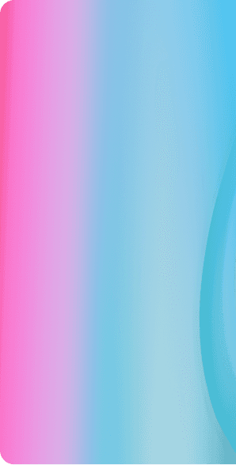
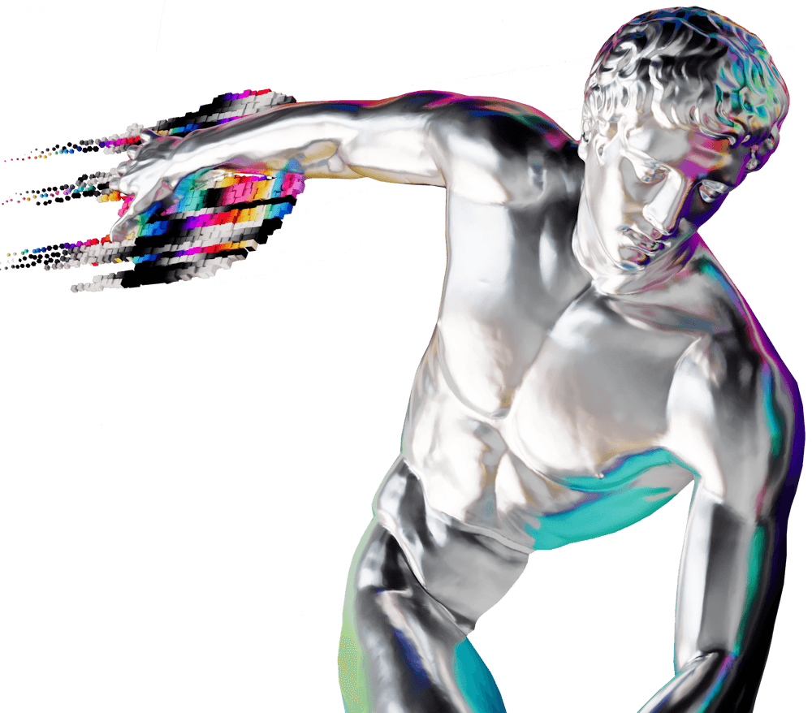

О невероятной выставке Эрика Булатова, шедеврах мировой фотографии моды фонда Still Art, выставке молодых итальянских фотографов Эдоардо Делилле и Джулии Пьермартири и других обновлениях МАММ рассказывает Ольга Свиблова эксклюзивно для Tele2.
Знакомьтесь с историей экспозиции в подкасте и приходите в музей за живым диалогом с современным искусством.
МАММ из первых уст
00:00:00
/ 00:00:00




Искусство за минуты
Меняйте неизрасходованные минуты Tele2 на билеты в музеи в личном кабинете на сайте или в мобильном приложении «Мой Tele2».
Еще не в Tele2? Присоединяйтесь!
Присоединиться 